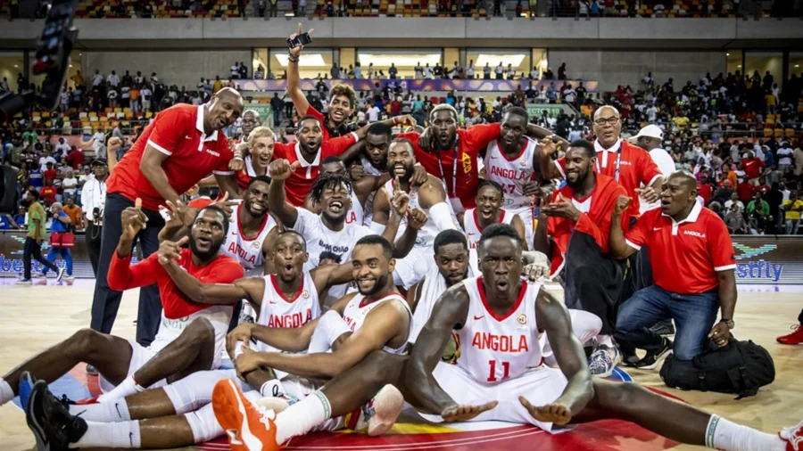
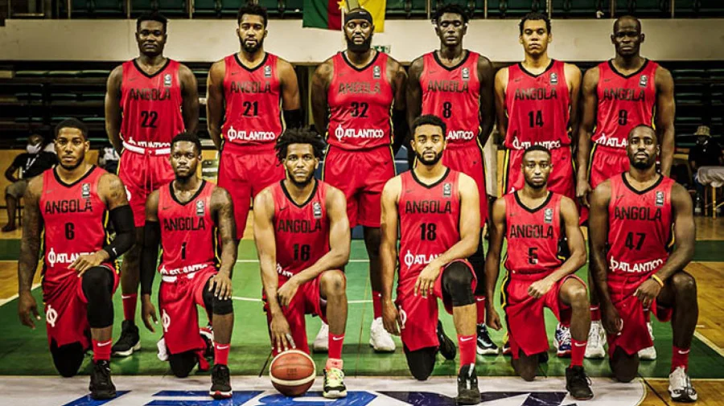
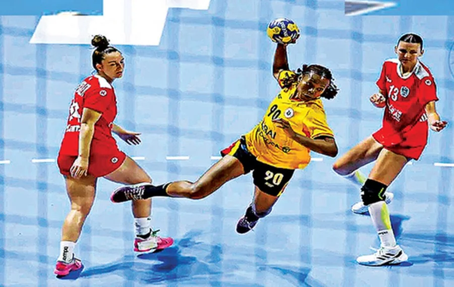

Angola prepara novos desafios no futebol internacional
A selecção nacional continua a preparar-se para os próximos compromissos internacionais. A equipe técnica trabalha na melhoria do desenpenho dos atletas e na construção de uma equipe competitiva para representar o país.
Basquetebol nacional mantém destaque no continente africano

O basquetebol continua a ser uma das modalidades de maior destaque no país. Clubes nacionais seguem a trabalhar para conquistar títulos e representar o país nas principais competições africanas.
Clubes reforçam preparação para novas competicões
As principais equipes nascionais iniciam novas fases de preparação com o objetivo de alcançar melhores resultados nas competições nacionais e internacionais
Futebol
Seleção Nacional entra em fase de preparação

A equipe nacinal de futebol iniciou uma nova fase de preparação com foco nos próximos desfios. Os jogadores trabalham aspectos técnicos e táticos para elevar o nível da equipe.
Futebol nacional ganha novos talentos
O campeonato nacional continua a revelar jovens jogadores com potenciais. Clubes nacionais apostam cada vez mais na formação para descobrir novos atletas.
Girabola mantém disputas equilibradas entre clubes
A principal competição de futebol nacional continua marcada pelo equilíbrio entre as equipas, com jogos competitivos e grandes apoio dos adeptos.
Basquetebol
Angola continua como referência no basquetebol africano

Com uma longa história na modalidade, a seleção nacional de basquetebol continua a ivestir no desenvolvimento do basquetebol, contando com clubes fortes e atletas talentosos.
Clubes preparam novas temporadas de basquetebol
As equipas nacionais iniciam os trabalhos de preparação para uma nova época, procurando melhorar o desenpenho e conquistar títulos.
Jovens atletas ganham espaço no basquetebol nacional
Novos talentos começam a destacar-se nas competições nacionais, mostrando o crescimento da modalidade entre jovens.
Outras Modalidades

Andebol Nacional continua a crescer
O andebol é uma das modalidades importantes no país, com atletas que repesentam Angola em competições nacionais e internacionais.
Atletismo prepara novos talentos nacionais

Atletas continuam a treinar para melhorar marcas e representar o país em grandes competições.
Voleibol ganha novos praticantes
A modalides tem conquistado novos seguidores, com clubes e escolas a promoverem o desenvolvimento do voleibol nacional.
Competições
Angola de olho nas grandes competições

A seleção nacional continua focada nas preparações para competições continentais, procurando elevar o nome de Angola no cenário internacional.
Competições nacionais movimentam o desporto nacional
Os campeonatos nacionais reúnem clubes de várias províncias, promovendo o crescimento das diferentes modalidades.